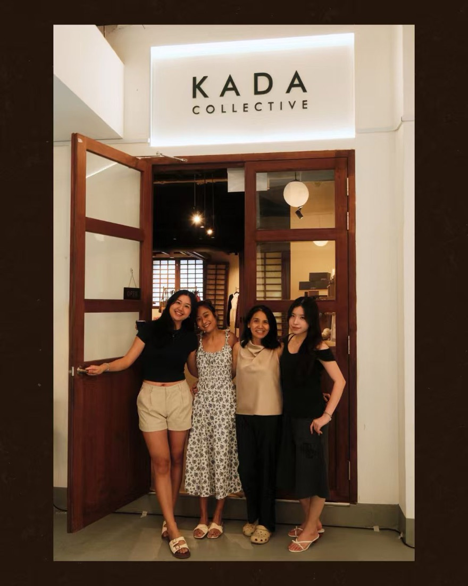

<title>关于 GMA 与我们</title>
<meta name="claude:viewport-fit-sides" content="cover">
<link rel="preconnect" href="https://fonts.googleapis.com">
<link rel="preconnect" href="https://fonts.gstatic.com" crossorigin>
<link rel="stylesheet" href="https://fonts.googleapis.com/css2?family=Fraunces:ital,opsz,wght@0,9..144,400;0,9..144,600;1,9..144,400&family=Noto+Serif+SC:wght@600;900&family=Noto+Sans+SC:wght@400;500;700&display=swap">
<style>
  /* Layout: 文档式单栏，像飞书原文一样标题加段落往下排；不用卡片和边框，只靠字体、字号和留白分层 */
  :root{
    --bg:#f7f2e9; --ink:#1f1a14; --ink-soft:#4a4136; --muted:#8a7d6a; --rule:#ddd2bf;
    --accent:#b23a1c;
    --serif:"Noto Serif SC","Songti SC",serif;
    --sans:"Noto Sans SC",-apple-system,"PingFang SC","Microsoft YaHei",sans-serif;
    --display:"Fraunces","Noto Serif SC",Georgia,serif;
  }
  @media (prefers-color-scheme: dark){
    :root:not([data-theme="light"]){
      --bg:#1a1611; --ink:#f0e8db; --ink-soft:#cfc3b0; --muted:#9d907b; --rule:#3d352a;
      --accent:#e4704c; color-scheme:dark;
    }
  }
  :root[data-theme="dark"]{
    --bg:#1a1611; --ink:#f0e8db; --ink-soft:#cfc3b0; --muted:#9d907b; --rule:#3d352a;
    --accent:#e4704c; color-scheme:dark;
  }

  *{box-sizing:border-box; margin:0; padding:0;}
  body{background:var(--bg); color:var(--ink); font-family:var(--sans); font-size:16px; line-height:1.85;
    -webkit-font-smoothing:antialiased;}
  .doc{max-width:720px; margin:0 auto; padding-block:72px 120px;
    padding-left:max(16px, env(safe-area-inset-left, 0px));
    padding-right:max(16px, env(safe-area-inset-right, 0px));}

  /* 语言切换：右上角一行小字 */
  .lang{display:flex; justify-content:flex-end; align-items:center; gap:16px; margin-bottom:48px; font-size:13px;}
  .title-row{display:flex; align-items:center; justify-content:space-between; gap:16px;}
  .title-row h1{min-width:0;}
  .title-row .logo{width:clamp(40px,7vw,56px); height:auto; aspect-ratio:1; border-radius:50%; flex:none; display:block;}
  .lang button{font:inherit; background:none; border:0; color:var(--muted); cursor:pointer; padding:2px 0;}
  .lang button[aria-pressed="true"]{color:var(--ink); text-decoration:underline; text-underline-offset:5px;
    text-decoration-color:var(--accent);}
  .lang button:focus-visible{outline:2px solid var(--accent); outline-offset:3px;}
  body.lang-zh .en{display:none !important;}
  body.lang-en .zh{display:none !important;}

  .en{font-family:var(--display);}
  p.en, li .en{display:block; color:var(--muted); font-size:15px; line-height:1.7; margin-top:6px;}
  body.lang-en p.en, body.lang-en li .en{color:var(--ink-soft); font-size:16px; margin-top:0;}

  /* 标题区 */
  .title-zh{font-family:var(--serif); font-weight:900; font-size:clamp(34px,6vw,52px); line-height:1.15;
    letter-spacing:-.01em;}
  .title-zh b{color:var(--accent); font-weight:900;}
  .title-zh .full{font-family:var(--display); font-weight:600; font-size:.52em; letter-spacing:0;
    white-space:nowrap; vertical-align:.12em;}
  .tagline{font-family:var(--display); font-style:italic; font-size:clamp(18px,2.4vw,21px); color:var(--ink-soft);
    line-height:1.5; margin-top:18px; max-width:36ch; text-wrap:balance;}
  .positioning{margin-top:28px; font-size:17px; color:var(--ink);}
  .positioning .en{font-size:15.5px;}

  /* 小节 */
  section{margin-top:84px;}
  .no{font-family:var(--display); font-size:14px; color:var(--accent); letter-spacing:.04em;}
  h2{font-family:var(--serif); font-weight:900; font-size:clamp(23px,3.4vw,28px); line-height:1.3; margin-top:6px;
    text-wrap:balance;}
  h2 .en{display:block; font-family:var(--display); font-weight:400; font-style:italic; font-size:17px;
    color:var(--muted); margin-top:2px;}
  body.lang-en h2 .en{font-style:normal; font-weight:600; font-size:clamp(23px,3.4vw,28px); color:var(--ink); margin-top:0;}
  section > p{margin-top:22px; color:var(--ink-soft); text-align:justify; text-justify:inter-ideograph;}
  section > p.en{text-align:left;}
  section > p + p.zh{margin-top:18px;}
  strong{color:var(--ink); font-weight:700;}

  /* 链路：三行标题 + 说明，细箭头连接，不加框 */
  ol.chain{list-style:none; margin-top:32px; display:grid; gap:0;}
  .chain li{padding-left:22px; border-left:1px solid var(--rule); position:relative; padding-bottom:30px;}
  .chain li:last-child{padding-bottom:0; border-left-color:transparent;}
  .chain li::before{content:""; position:absolute; left:-4px; top:11px; width:7px; height:7px; border-radius:50%;
    background:var(--accent);}
  .chain li:not(:last-child)::after{content:"↓"; position:absolute; left:-6px; bottom:4px; font-size:11px;
    line-height:1; color:var(--accent); background:var(--bg);}
  .chain h3{font-family:var(--serif); font-weight:600; font-size:19px; line-height:1.4; color:var(--ink);}
  .chain h3 .en{font-family:var(--display); font-weight:400; font-style:italic; font-size:14px; color:var(--muted); margin-left:10px;}
  body.lang-en .chain h3 .en{font-style:normal; font-weight:600; font-size:19px; color:var(--ink); margin-left:0;}
  .chain p{color:var(--ink-soft); font-size:15px; margin-top:2px;}
  .chain p.en{font-size:14px; margin-top:2px;}

  /* 人物 */
  .person{margin-top:44px; display:grid; grid-template-columns:96px 1fr; gap:24px; align-items:start;}
  .person .bio{min-width:0;}
  .person .avatar{width:96px; max-width:100%; aspect-ratio:4/5; object-fit:cover; border-radius:6px; display:block; margin-top:4px;}
  @media (max-width:560px){ .person{grid-template-columns:72px 1fr; gap:16px;} .person .avatar{width:72px;} }
  .person h3{font-family:var(--display); font-weight:600; font-size:24px; line-height:1.2;}
  .person h3 small{font-style:italic; font-weight:400; font-size:15px; color:var(--accent); margin-left:10px;}
  .person p{margin-top:12px; color:var(--ink-soft); text-align:justify; text-justify:inter-ideograph;}
  .person p.en{text-align:left;}
  .nums{display:flex; flex-wrap:wrap; gap:12px 44px; margin-top:20px;}
  .nums div{min-width:0;}
  .nums .n{font-family:var(--serif); font-weight:900; font-size:30px; line-height:1.1; color:var(--ink);
    font-variant-numeric:tabular-nums;}
  .nums .n small{font-family:var(--sans); font-size:14px; font-weight:500; margin-left:2px;}
  .nums .k{font-size:13.5px; color:var(--muted); margin-top:4px; max-width:24ch; line-height:1.55;}
  .nums .k .en{display:block; font-size:12.5px;}

  /* 照片 */
  .photos{display:grid; grid-template-columns:1fr 1fr; gap:12px; margin-top:30px;}
  .photos figure{min-width:0;}
  .photos img{width:100%; max-width:100%; aspect-ratio:4/5; object-fit:cover; display:block;}
  .photos figcaption{font-size:13px; color:var(--muted); margin-top:8px; line-height:1.5;}
  .photos figcaption .en{font-size:12.5px; margin-left:6px;}

  .date{font-family:var(--display); color:var(--ink); font-weight:600;}

  /* 结尾 */
  .end{margin-top:48px; padding-top:40px; border-top:1px solid var(--rule);}
  .end .big{font-family:var(--serif); font-weight:900; font-size:clamp(22px,3.2vw,27px); line-height:1.4;}
  .end .big .en{display:block; font-family:var(--display); font-style:italic; font-weight:400; font-size:17px;
    color:var(--muted); margin-top:4px;}
  .contact{margin-top:28px; display:grid; grid-template-columns:1fr auto; gap:28px; align-items:end;}
  .contact dl{display:grid; grid-template-columns:auto 1fr; gap:8px 22px; font-size:15px; min-width:0;}
  .contact dt{color:var(--muted);}
  .contact dd{color:var(--ink); user-select:all; word-break:break-all;}
  .contact img{width:112px; height:112px; display:block;}
  footer{margin-top:64px; font-family:var(--display); font-style:italic; font-size:13px; color:var(--muted);}

  @media (max-width:560px){
    .doc{padding-block:40px 80px;}
    .lang{margin-bottom:40px;}
    section{margin-top:64px;}
    .contact{grid-template-columns:1fr;}
  }
  @media print{ .lang{display:none;} .doc{padding-block:0;} }
</style>

<main class="doc">
  <div class="lang" role="group" aria-label="语言 / Language">
    <button type="button" id="lang-both" data-lang="both" aria-pressed="true">中 / EN</button>
    <button type="button" id="lang-zh" data-lang="zh" aria-pressed="false">中文</button>
    <button type="button" id="lang-en" data-lang="en" aria-pressed="false">English</button>
  </div>

  <header>
    <div class="title-row"><h1 class="title-zh"><b>GMA</b><span class="full">｜Global Market Accelerator</span></h1></div>
    <p class="positioning"><span class="zh">GMA 专注于帮助品牌探索并进入新的市场，通过连接当地消费者、销售渠道、合作伙伴及商业资源，协助品牌建立适合当地市场的进入路径，并逐步实现商业发展。我们相信，进入一个新市场，不只是开展营销活动、运营社交媒体或寻找一个分销商，而是一条完整的路径：</span>
      <span class="en" style="display:block; margin-top:6px; color:var(--muted)">GMA helps brands explore and enter new markets. By connecting them with local consumers, sales channels, partners and commercial resources, we help each brand build an entry path that fits the local market and grow its business there over time. We believe entering a new market takes more than marketing campaigns, a social media account or a distributor. It is a complete path:</span></p>

    <ol class="chain">
      <li><h3><span class="zh">市场理解</span><span class="en">Market Understanding</span></h3>
        <p class="zh">理解市场、消费者、品牌定位与进入机会</p>
        <p class="en">Understand the market, its consumers, the brand's positioning and the way in</p></li>
      <li><h3><span class="zh">生态进入</span><span class="en">Ecosystem Entry</span></h3>
        <p class="zh">连接本地消费者、社交媒体、零售渠道、商业伙伴及行业资源</p>
        <p class="en">Connect with local consumers, social media, retail channels, business partners and industry resources</p></li>
      <li><h3><span class="zh">市场发展</span><span class="en">Market Development</span></h3>
        <p class="zh">通过实际运营、市场验证与商业拓展，逐步建立长期发展路径</p>
        <p class="en">Build a long-term path through real operations, market testing and business expansion</p></li>
    </ol>
  </header>


  <section>
    <div class="no">01</div>
    <h2><span class="zh">团队</span><span class="en">The team</span></h2>

    <div class="person"><div class="bio">
      <h3>Jade<small>China × Singapore</small></h3>
      <p class="zh">曾在新加坡学习和工作，参与过当地电商品牌从 0 到 1 的发展，涉及供应链、本地化运营、业务增长及品牌合作等方面，推动品牌获《联合早报》报道，并促成与新加坡航空、万豪酒店、DBS 银行等头部品牌的合作。回到中国后，持续参与跨境及中国本地化商业、品牌发展及文化 IP 项目，关注如何整合不同市场的资源，并将商业机会转化为实际可执行的路径。</p>
      <p class="en">Jade studied and worked in Singapore, where she helped take a local e-commerce brand from zero to one, covering supply chain, localized operations, business growth and brand partnerships. She secured coverage in Lianhe Zaobao and brokered partnerships with Singapore Airlines, Marriott and DBS Bank. Back in China, she has worked on cross-border and China-localized business, brand development and cultural IP projects, focusing on how to combine resources across markets and turn opportunities into workable plans.</p>
    </div></div>

    <div class="person"><div class="bio">
      <h3>Carrie<small>China × UK</small></h3>
      <p class="zh">曾在英国学习和生活，具备跨文化沟通及中英市场拓展经验，了解英国本地的商业环境、消费者习惯与行业规则，参与过中国品牌进入英国市场的项目，协助完成市场调研、本地资源对接及落地执行。同时拥有中国社交媒体运营、内容增长和数字产品商业化的实践经验。</p>
      <p class="en">Carrie studied and lived in the UK. She brings cross-cultural communication and China–UK market development experience, knows the UK's business environment, consumer habits and industry practice, and has worked on projects bringing Chinese brands into the UK, from market research to local partner introductions and execution. She also has hands-on experience in Chinese social media, content growth and digital product monetization.</p>
    </div></div>

    <p class="zh" style="margin-top:40px">我们希望结合双方对不同市场的理解，以及在内容增长、商业拓展和项目执行方面的经验，帮助品牌更好地连接原有市场与目标市场；同时，也为本地零售与商业伙伴带来更多元、有特色的中国品牌与产品。</p>
    <p class="en">We combine our understanding of different markets with experience in content growth, business development and project delivery, to help brands connect their home market with the market they want to enter, while bringing local retail and business partners a wider, more distinctive range of Chinese brands and products.</p>
  </section>

  <section>
    <div class="no">02</div>
    <h2><span class="zh">新加坡合作伙伴：KADA Collective</span><span class="en">Singapore partner: KADA Collective</span></h2>
    <p class="zh">KADA Collective 是我们在新加坡的合作伙伴。<span class="date">2026 年 11 月 15 日</span>，我们与 KADA 完成第一次合作，中国品牌产品在 KADA 空间正式上线，首日即迎来火爆人气。</p>
    <p class="en">KADA Collective is our partner in Singapore. On 15 November 2026 we completed our first launch together: Chinese brand products went live in the KADA space and drew a packed crowd from day one.</p>

    <div class="photos">
      <figure>
        <figcaption><span class="zh">开业当天</span><span class="en">Launch day</span></figcaption></figure>
      <figure>
        <figcaption><span class="zh">GMA × KADA 团队</span><span class="en">The GMA × KADA team</span></figcaption></figure>
    </div>

    <p class="zh">开业当天现场人流旺、气氛热烈，中国品牌受到不少本地顾客的关注，开业首周即实现稳定销售，为品牌在新加坡迈出了扎实的第一步。</p>
    <p class="en">The launch drew strong footfall and a lively crowd. The Chinese brands caught the attention of many local shoppers and sold steadily through the first week, a solid first step for them in Singapore.</p>
  </section>

  <div class="end">
    <p class="big"><span class="zh">期待与更多伙伴相遇，携手开拓新的机会。</span><span class="en">We look forward to meeting more partners and opening up new opportunities together.</span></p>
    <div class="contact">
      <dl>
        <dt><span class="zh">GMA 微信</span><span class="en">WeChat</span></dt><dd>good1205226715</dd>
        <dt>Jade</dt><dd>1205226715@qq.com</dd>
        <dt>Carrie</dt><dd>yt1253082426@163.com</dd>
      </dl>
      
    </div>
  </div>

  <footer>Global Market Accelerator</footer>
</main>

<script>
(function(){
  var btns = document.querySelectorAll('.lang button');
  function set(lang){
    document.body.classList.remove('lang-zh','lang-en','lang-both');
    document.body.classList.add('lang-' + lang);
    btns.forEach(function(b){ b.setAttribute('aria-pressed', b.dataset.lang === lang ? 'true' : 'false'); });
    try { localStorage.setItem('gma-about-lang', lang); } catch(e) {}
  }
  btns.forEach(function(b){ b.addEventListener('click', function(){ set(b.dataset.lang); }); });
  var saved = null;
  try { saved = localStorage.getItem('gma-about-lang'); } catch(e) {}
  set(saved === 'zh' || saved === 'en' ? saved : 'both');
})();
</script>
